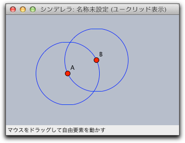
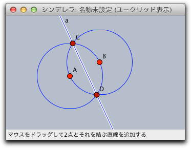
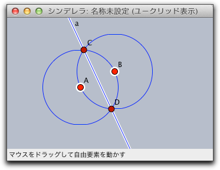
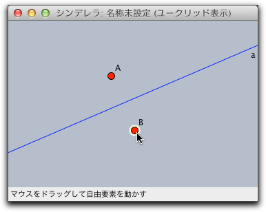
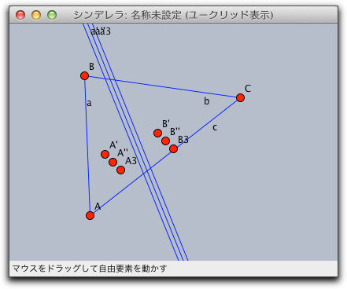
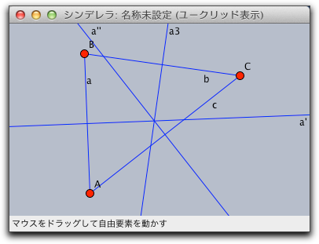
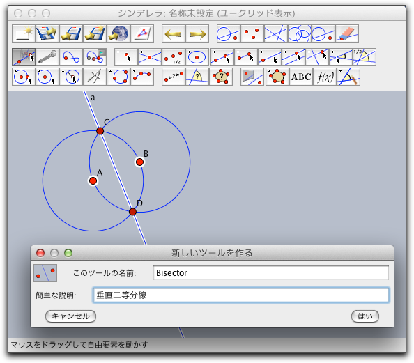

複写、貼付、マクロ
シンデレラの以前のバージョンとは異なり、シンデレラ２では、マクロが扱えるようになりました。シンデレラのマクロの概念は、他の幾何ソフトウエアとは異なります。 以下にマクロを使う方法を解説します。
複写／貼付
自動的にその場でマクロをつくる最も簡単な方法は、複写／貼付を使うことです。 動かすモードでいくつかの要素を選択し、メニューから 編集/複写 を選ぶと(あるいは同等のキーボードショートカットによって)、シンデレラは選ばれた要素をクリップボードに複写します。さらに、選ばれた要素の関係を定める中間の作図ステップが、隠れた要素として複写されます。要素を貼付けると、これらの隠れた要素も貼付けられ、結果として貼付けられた要素は以前のように機能します。
たとえば 円を加える を使って、２点A,Bをそれぞれ中心とし、互いの点を通る円を描きます。
 |
次に、 直線を加える を用いて、線分ABの垂直二等分線を加えます。(２点が２円の交点にぴったり合うようにします)
 |
さて、 動かすモード にして、シフトキーを押しながら点A,Bをクリックします。
 |
こうして選ばれた点A,Bと直線aは編集メニューの複写かキーボードショートカット(Macでは Command+C、WindowsではCtrl+C)によってクリップボードに複写されます。
新しいウィンドウを開き (Command-N か Ctrl-N) クリップボードのデータを貼付ます(Macでは Command+V、WindowsではCtrl+V)。点A,Bと直線aが見えるでしょう。円は隠れた要素として追加されており、見たり使ったりすることはできませんが、直線aの位置を決めるのに用いられます。点AとBを動かしてみるとわかります。直線はいつも線分ABの垂直二等分線になっているでしょう。?
 |
再定義

あなたは、三角形の三辺の垂直二等分線をどのように引きますか? まず、「線分を加える」で三角形ABCを描き、先ほどの方法で、複写／貼付 をすると点と垂直二等分線の組を早く描くことができます。 しかし、垂直二等分線を３回貼付けるだけでは不十分です。
 |
３回続けて貼付けをすると、3組の点のペアと垂直２等分線ができています。うまい具合に、すこしずつずらして置かれています。ここで
点の再定義 を用います。モードメニューから 点の再定義 を選ぶか、「点の取り付け/取り外し」ボタンをクリックして点の再定義モードに移り、A' を Aに, B' を Bに, A'' を Aに, B'' を Cに, A3 を Bに, そして B3 を Cに 、それぞれドラッグしていきます。すると、先ほど貼付けてできた点は、もとの三角形の頂点と同じになり、３辺の垂直２等分線が完成します。 |
ツールを自前で作る
複写/貼付を伴う作業は、作図で繰り返し使われます。もし、部分的な作図を何度も使いたい場合は、新しいツールを作るという便利な方法があります。新しいツールとして定義したい要素を選択して、 "編集/選択項目からツール作成" を選びます。先ほどの垂直２等分線の例でいうと、次のようなダイアログが出ます。 ここで、このツールの名前と説明を書きます。アイコンは自動的に作成されます。
（なお、図では日本語で「垂直二等分線」となっていますが、そのままでは日本語入力はできません。他のワープロソフトなどを開いてそちらで入力し、カットアンドペーストで複写します）
 |
ツールが作られたことを確かめたならば、これ以降、ツールバーからこのツールを利用できます。作成したツールはファイルに保存でき、スクリプトメニューの対応するメニュー項目を使っている他の図に読み込むことができます。
Page last modified on Saturday 25 of February, 2012 [10:51:52 UTC].
The original document is available at
http://doc.cinderella.de/tiki-index.php?page=Copy%2C%20Paste%2C%20and%20MacrosJ